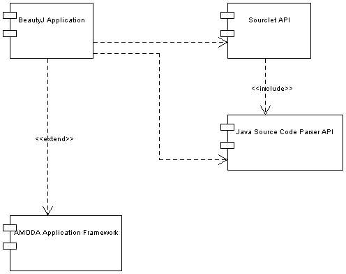
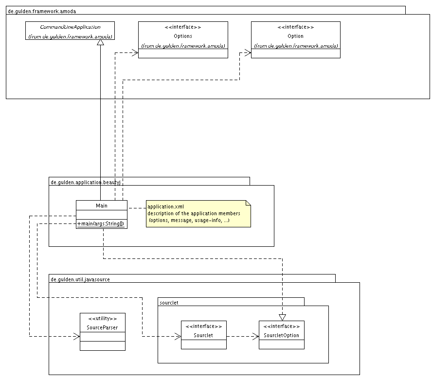
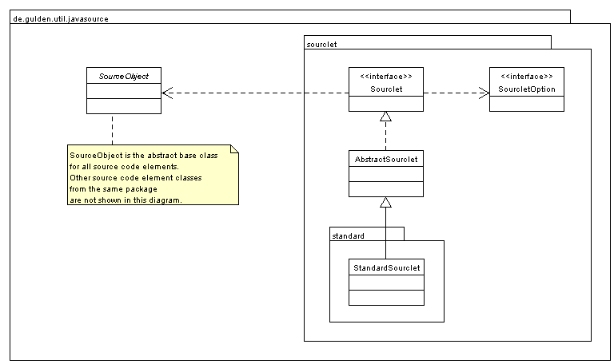
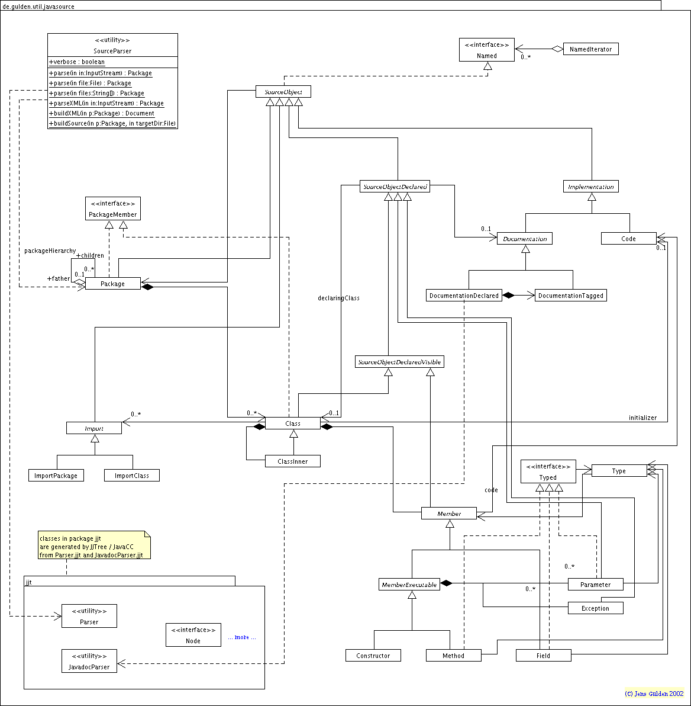

|
|
Customizable Java Source Code Transformation Tool |
|
|
|
Home – Download – Documentation – UML – Examples – FAQ |
|||
|
1. Components Overview
2. Main Classes This diagram show the dependencies and relationships between the main application classes.
Note that the file 3. Sourclet API The Sourclet API models a pluggable mechanism to auto-format Java source code.
4. Java Source Parser API The Java Source Parser API models the elements of Java source code.
See the Javadoc API documentation for implementation details.
|